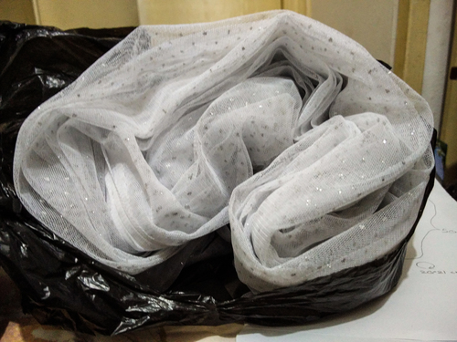

Practical Skills
Overview

Field work
 

As part of my master’s thesis, I spent 3 months in Kigoma, Tanzania, conducting field work in Lake Tanganyika. Staying/Working in a developing nation presents challenges, which in turn requires creativity and quick thinking. My best example of this is the net shown in the picture to the right: the zooplankton net that I had originally brought from Denmark was lost, due to a faulty rope. However, we managed to construct the net shown in the picture using various components found in the local market (the mesh itself is made of bride’s veil), which adequately allowed us to finish our samplings. To see more images from the construction, feel free to browse through the pictures on the right.
Lab work
Data Science
 During my coursework, I was tought on statistical analysis, multivariate analysis, as well as the basics of modelling and GIS. Afterwards, I have worked to expand my skills within this field, mainly within the R environment, although I have recently started learning Python as well. I continue to spend my free time undertaking courses on data science and machine learning, and hope to be able to apply these skills to ecosystem modelling research in the future.
During my coursework, I was tought on statistical analysis, multivariate analysis, as well as the basics of modelling and GIS. Afterwards, I have worked to expand my skills within this field, mainly within the R environment, although I have recently started learning Python as well. I continue to spend my free time undertaking courses on data science and machine learning, and hope to be able to apply these skills to ecosystem modelling research in the future.
Stable Isotope Analysis
 The backbone of my master’s thesis was the utilization of δ13C and δ15N isotopes to estimate the pelagic food web of Lake Tanganyika, East Africa. The preparation involved dissecting individuals, drying of samples, packaging and shipping. Analysis was based on both visual estimation from the isotope biplot (right), comparison with a supplementary stomach analysis, bayesian modelling using MCMC-Dirichlet in the SIAR package for R, and standard ellipse overlap, calculated using the SIBER package for R.
The backbone of my master’s thesis was the utilization of δ13C and δ15N isotopes to estimate the pelagic food web of Lake Tanganyika, East Africa. The preparation involved dissecting individuals, drying of samples, packaging and shipping. Analysis was based on both visual estimation from the isotope biplot (right), comparison with a supplementary stomach analysis, bayesian modelling using MCMC-Dirichlet in the SIAR package for R, and standard ellipse overlap, calculated using the SIBER package for R.